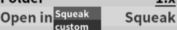

Choose a mod, rightclick it and click "Setup a directory for mod"
Note: Some of the mods listed in Discover tab does not link to site with download, that means some mods cannot be downloaded
Click Open in -> Squeak
Click Open in -> NG player,click .swf name, type in .swf name and press enter
Click Open in -> Custom,
click .exe name and enter file name (with extension)

Click done, then press esc or close Friendly mod setup for SML in other way,
open created mod directory,
paste your mod in
Click on folder icon next to Settings tab,
open mods folder,
rightclick > New > Folder, name it with your mod name, open that folder,
rightclick > New > Text document, open it,
Write:
name="[name]"
defold="[folder in SML]"
for errors:
Could not open avalible.lua
Could not open settings.lua
nativefs/nativefs.lua:173: attempt to index local 'data' (a nil value)
Also works if you want to reset SML
Open SML directory,
and run update.exe
for errors:
The code execution cannot proceed because [file] was not found. Reinstalling program may fix this problem.
Go to Love2D site, download zipped version for Windows,
open the zip file in file explorer and copy missing files to SML directory
or just download SML again
Stop process - Open task manager,
select app labeled "LÖVE 11.4" and click End task at bottom right corner, repeat for "Windows Command Processor"
open SML directory,
delete update.exe,
download update.exe from here, save it to SML directory and run it